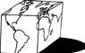

\1\2ğaç\3
Ortaçağ’da insanlar Dünya’nın şeklinin nasıl olduğunu düşünüyordu?

Düşündüğünüz gibi değil.
mö 4. yüzyıl civarından beri Dünya’nın düz olduğunu zanneden hemen hemen kimse olmamıştır. Fakat Dünya’yı düz bir tepsi gibi göstermek isteseniz Birleşmiş Milletler bayrağındakine çok benzer bir şey elde edersiniz.
Hatta dümdüz bir Dünya inanışı, 19. yüzyıl öncesinde ortaya çıkmış olan bir şey değildi. Bunun müsebbibi olan metin, Washington Irving’in, Kolomb’un, yolculuğuna Dünya’nın yuvarlak olduğunu kanıtlamak için çıktığına dair hatalı izlenimi yansıtan yarı kurgusal The Life and Voyages of Christopher Columbus [Christof Kolomb’un Hayatı ve Yolculukları] (1828) kitabıdır.
Tepsi şeklinde bir Dünya fikri ciddi olarak ilk kez 1838’de tuhaf bir İngiliz olan Samuel Birley Rowbotham tarafından yayımlanan on altı sayfalık bir makaleyle ortaya atıldı: “Zetetic Astronomy: A Description of Several Experiments which Prove that the Surface of the Sea Is a Perfect Plane and that the Earth is not a Globe [Zetetik Astronomi: Dünya’nın Küre Olmadığını ve Denizin Dümdüz Bir Yüzey Olduğunu Kanıtlayan Çeşitli Deneylerin Tarifi] (“Zetetik”, “araştırmak, soruşturmak” anlamına gelen Yunanca zetein kelimesinden türemiştir).
Bir yüzyıldan daha uzun bir süre sonra, sadık bir Hıristiyan olan Samuel Shenton isminde bir Kraliyet Astronomi Birliği üyesi, Evrensel Zetetik Birliği’ni, Uluslararası Düz Dünya Birliği olarak yeniden kurdu.
NASA’nın 1960’larda aya ayak basmakla sonuçlanan uzay programının bu konuyu tarihin derinliklerine gömmesi gerekirdi. Fakat Shenton yılmıyordu. Uzaydan çekilmiş olan küre şeklindeki Dünya’nın resimlerine bakınca “Bunun gibi bir fotoğrafın eğitimsiz bir gözü nasıl kandırabileceğini görmek çok kolay” dedi. Apollo inişleri, tabii ki senaryosu Arthur C. Clarke tarafından yazılmış bir Hollywood hilesiydi. Kurduğu derneğe üye olanlar hızla arttı.
Shenton 1971’de öldü, ama birliğin başkanı olacak selefini seçmeyi ihmal etmemişti. Charles K. Johnson yönetimi ele aldı ve kahramanca, gösterişsiz bir “Büyük Bilim20 karşıtı” hareketi canlandırdı. 1990’ların başında üyeleri 3500’lerin üzerine yükseliverdi.
Mojave çölünün engin düzlüğünde yaşamış ve çalışmış olan Johnson, üzerinde yaşadığımız Dünya’yı, merkezinde Kuzey Kutbu’nun olduğu, çevresi 45 metre yüksekliğindeki buzdan duvarla örülü bir disk olarak tasavvur etmiştir. Güneş ve Ay’ın her ikisi de 51 km çapında ve yıldızlar Dünya’dan “yaklaşık San Francisco’dan Boston arası kadar bir mesafededir.”
Johnson’un çöl sığınağı 1995’te yandı ve birliğin tüm belgeleri, üye listeleri yok oldu. Johnson, birliğin birkaç yüz üyeye gerilediği sıralarda, 2001’de öldü. Birlik şu anda sadece, 800 kayıtlı kullanıcısı olan bir internet forumu olarak varlığını sürdürüyor: www.theflatearthsociety.org.
20 Büyük Bilim (Big Science), 2. Dünya Savaşı öncesinde ve sırasında büyük makine ve laboratuvarlarda yapılan büyük bütçeli, büyük ekipli çalışmaların bilimde meydana getirdiği değişimleri açıklamak için kullanılan bir terimdir (ç.n.).